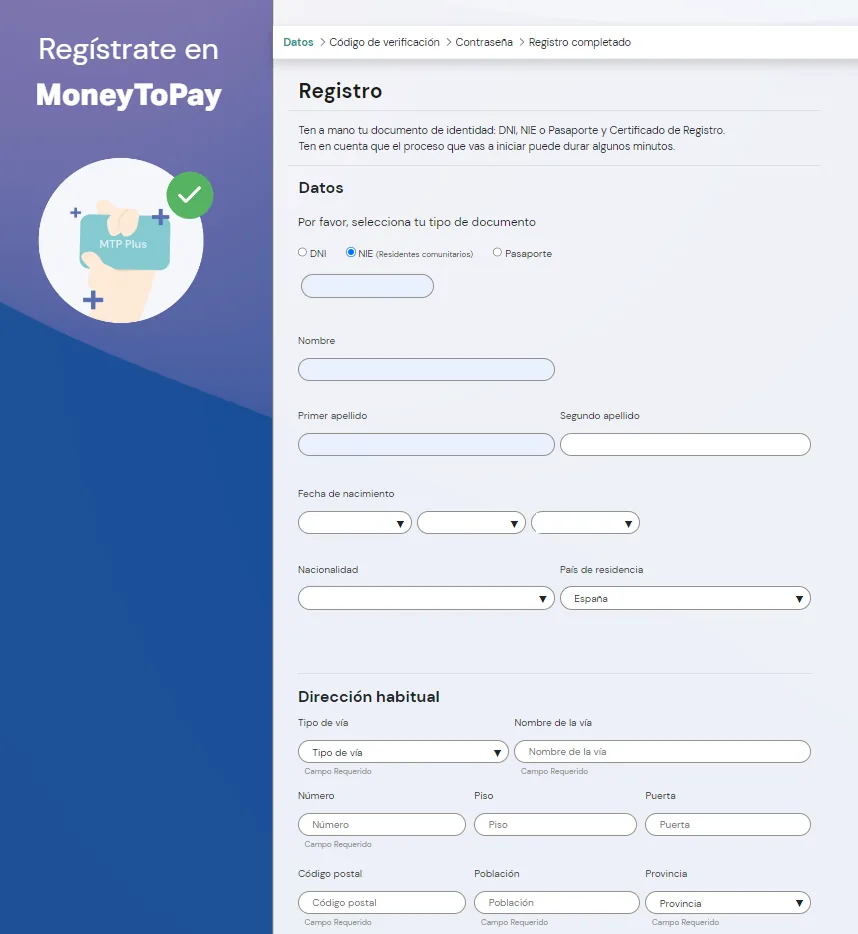
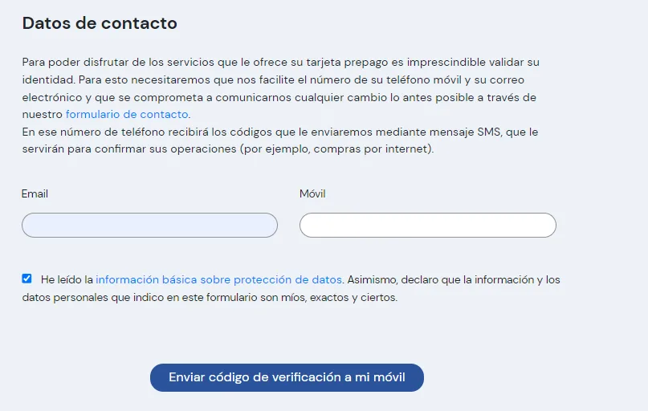
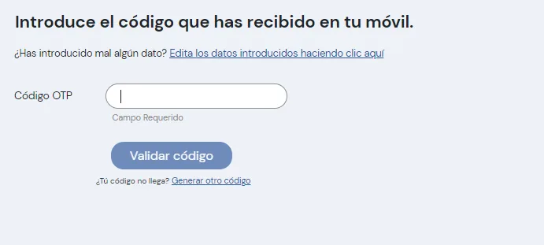
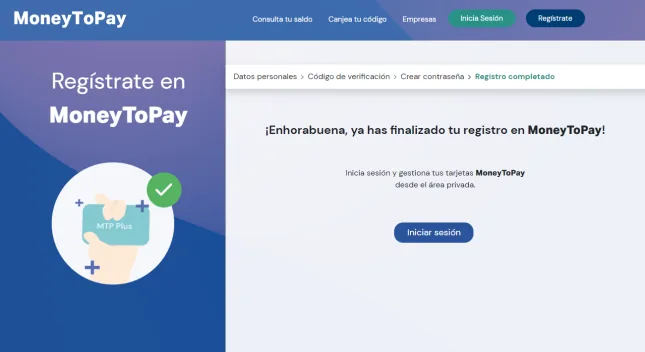
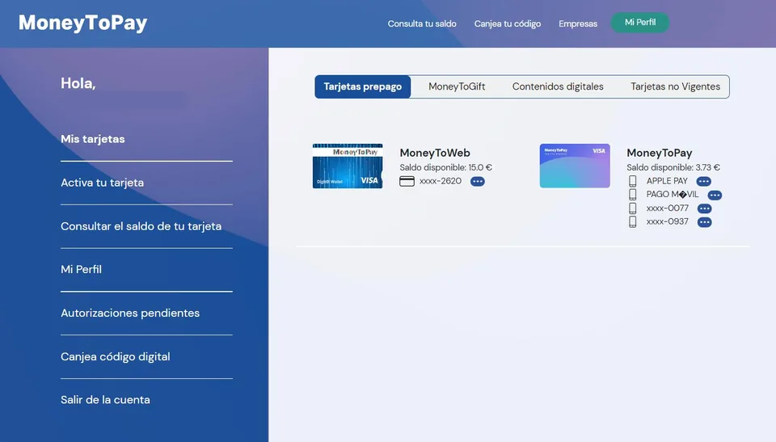
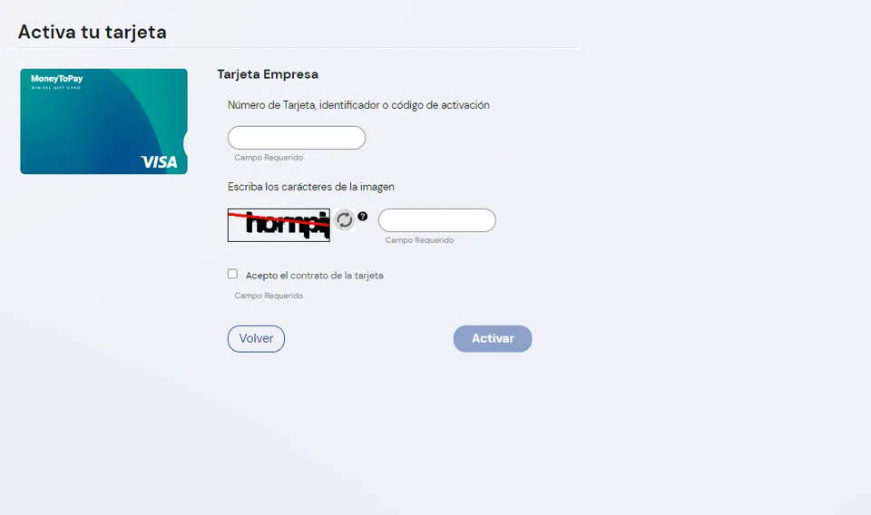
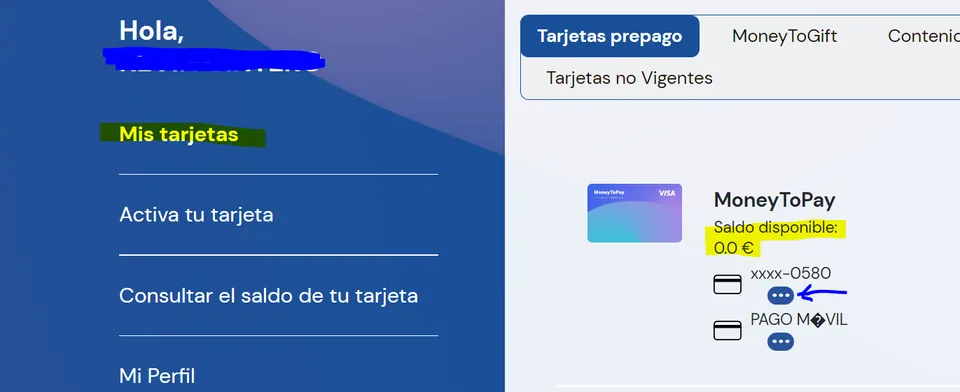
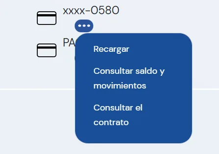

Activar la tarjeta
La tarjeta no funciona hasta que la activas. Se hace una sola vez en la web de MoneyToPay, la entidad que la emite, y lleva unos diez minutos.
Antes de empezar
- Mejor desde un ordenador. MoneyToPay advierte de que desde el móvil puede que no se completen todos los pasos.
- Debe hacerlo la persona que solicitó la ayuda (el progenitor solicitante), con sus propios datos.
- Ten a mano la tarjeta, tu DNI o NIE y el móvil, porque recibirás un código por SMS.
1. Crea tu usuario en MoneyToPay
-
Entra en moneytopay.com y pulsa «Regístrate»
Ve a www.moneytopay.com. El botón está arriba a la derecha.
-
Rellena tus datos personales
Se piden siete: DNI o NIE, nombre, primer y segundo apellido, fecha de nacimiento, nacionalidad y país de residencia.

Formulario de registro. En esta y en las demás capturas se han ocultado los datos personales. -
Indica tu correo electrónico y tu móvil

Datos de contacto y botón para recibir el código por SMS. -
Escribe el código que recibes por SMS
Es un código de un solo uso que confirma que el móvil es tuyo.

Validación del código recibido por SMS. -
Crea una contraseña
Guárdala bien: la necesitarás para consultar el saldo y los movimientos.
-
Registro completado
Ya tienes usuario. Falta vincular la tarjeta.

Confirmación del registro.
2. Vincula y activa la tarjeta
-
Inicia sesión en tu área privada
Entra en moneytopay.com con tu usuario y contraseña.

Área privada, con el menú de la izquierda. -
Elige «Vincular una tarjeta» y después «Tarjeta Empresa»
En el menú puede aparecer como «Activa tu tarjeta». «Tarjeta Empresa» es el nombre que MoneyToPay da a la Tarjeta Familia.
-
Introduce los datos de la tarjeta y pulsa «Activar»
Cópialos tal como aparecen en la tarjeta, escribe los caracteres de la imagen y acepta el contrato.

Activación de la tarjeta.
3. Comprueba que ha funcionado
-
Cierra la sesión y vuelve a entrar
-
Abre «Mis tarjetas»
Debes ver la imagen de la tarjeta y el saldo disponible.

«Mis tarjetas»: la tarjeta, su saldo y el botón de tres puntos. -
Para ver los movimientos, pulsa los tres puntos
Están debajo del número de la tarjeta.

Menú de los tres puntos.
Si ves la tarjeta y su saldo, está activada y ya puedes pagar con ella.
Si no aparece, compruébalo también en la app de MoneyToPay. A veces la web muestra «No tengo ninguna tarjeta MoneyToPay» aunque la tarjeta esté vinculada, y en cambio sí se ve en la app con el mismo usuario. También puedes consultar el saldo con los datos de la tarjeta. Si tampoco aparece allí, no está vinculada a tu DNI y todavía no funciona: repite el apartado 2 o llama a MoneyToPay.